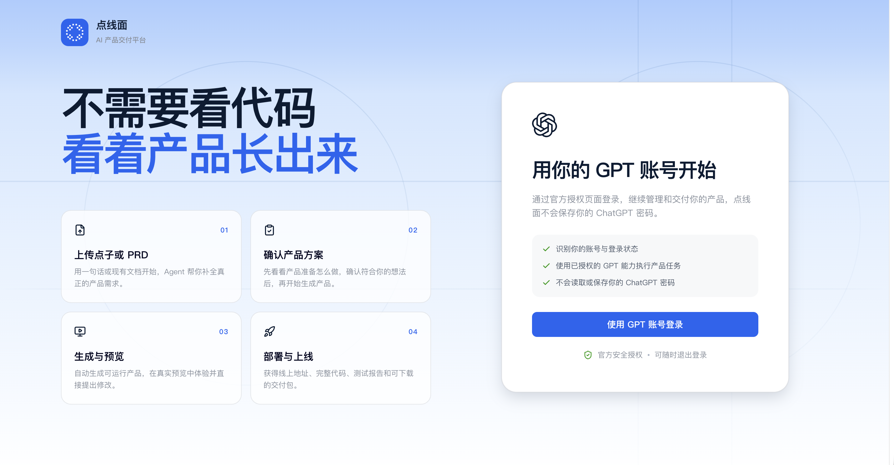
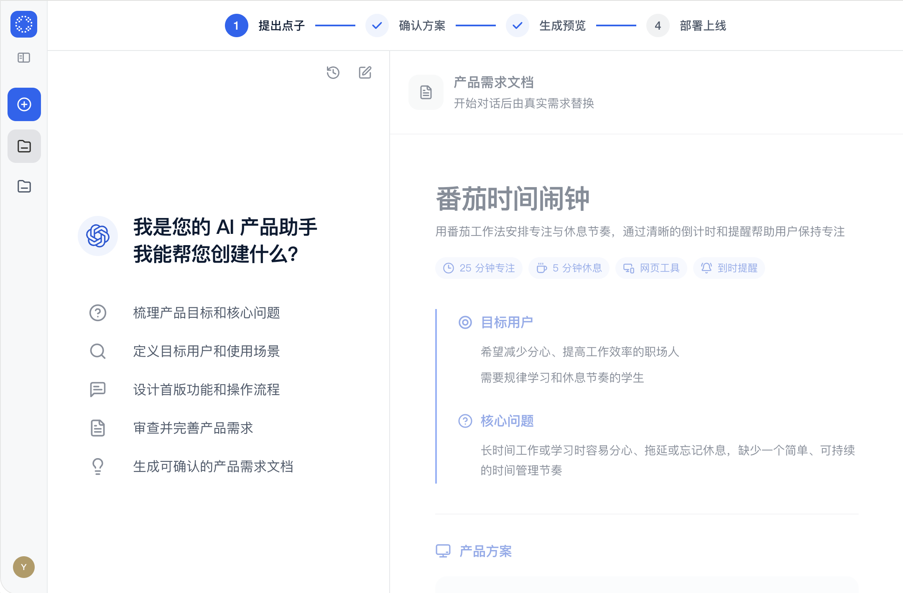
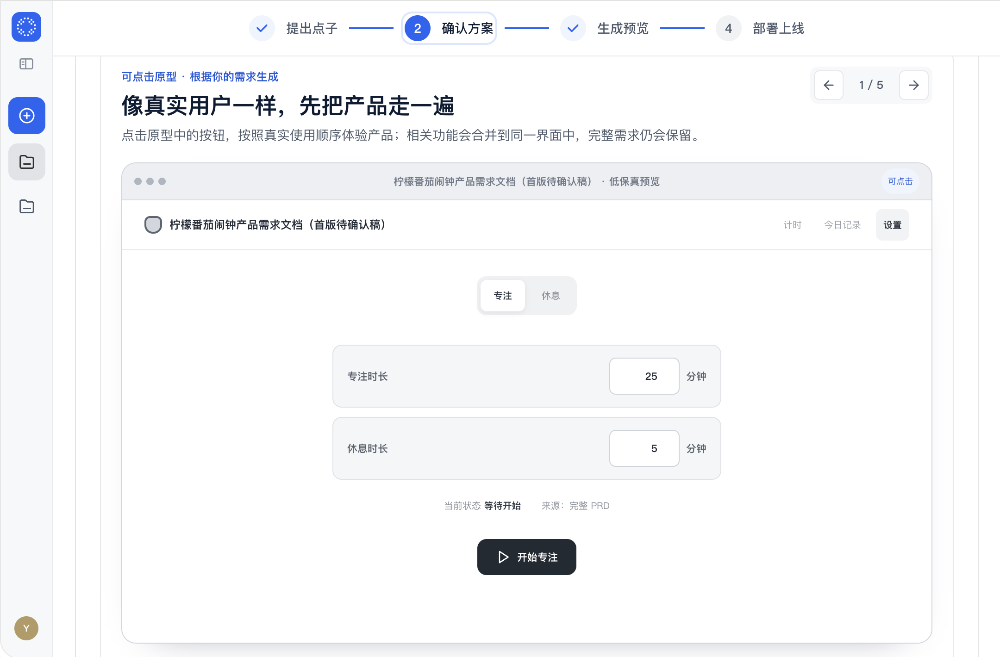
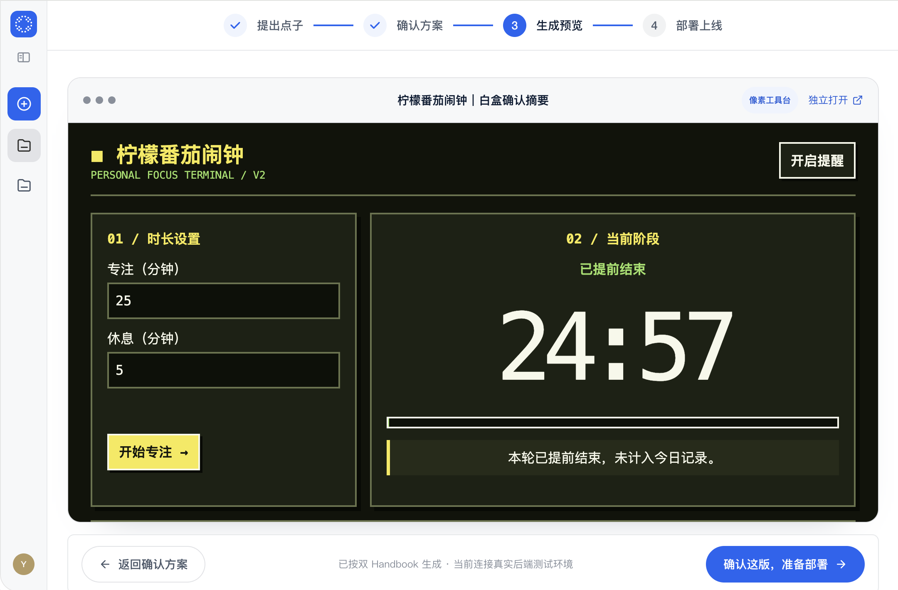
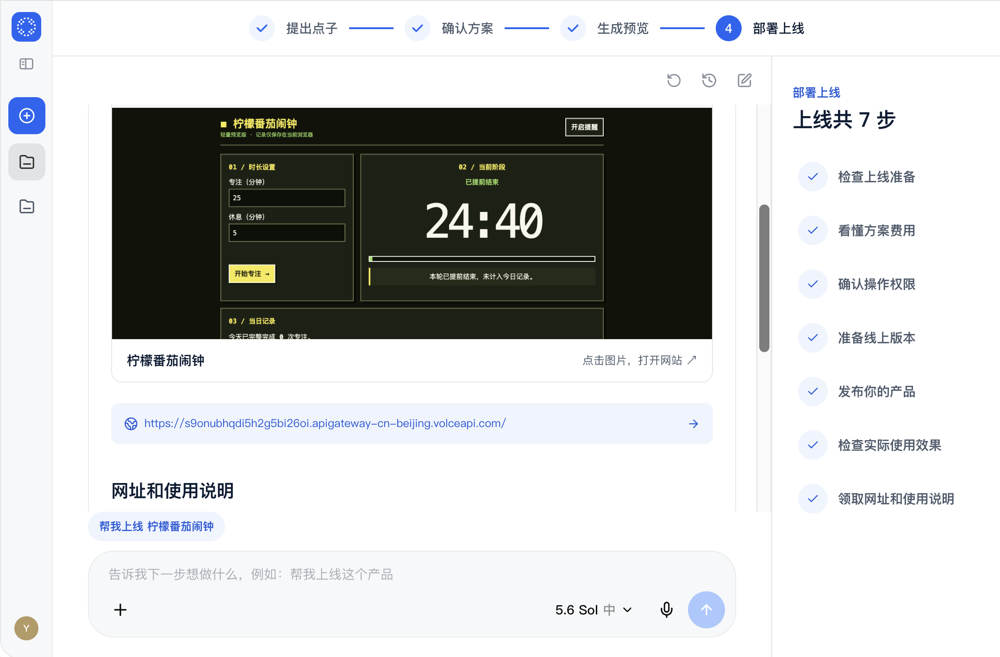

01 · IDEA
提出点子，把模糊想法说清楚
用一句话描述想做的产品，也可以补充文档和参考资料。AI 会追问关键问题，把零散想法整理成一份可检查的完整 PRD。

02 · SOLUTION
确认方案，让每个页面都有依据
先看懂产品结构和关键流程，再通过低保真页面故事板确认首版范围。你确认之后，方案才会进入下一步。

03 · PREVIEW
生成预览，直接体验真实产品
选择合适的 UI 风格，系统会读取已确认的 PRD 和方案，生成可以点击、可以操作、可以继续修改的真实 Web 页面。

04 · DEPLOY
部署上线，把成果交到真实用户手里
跟随部署助手完成账号准备、费用确认、发布和上线验收。每一步都有状态提示，最终获得可访问地址与完整交付物。

这个产品由点线面开发，点击下方链接即可体验
https://s9onubhqdi5h2g5bi26oi.apigateway-cn-beijing.volceapi.com/
把想法变成真正能用的产品
从第一句话开始，点线面陪你走完整个产品交付流程。
立即体验点线面